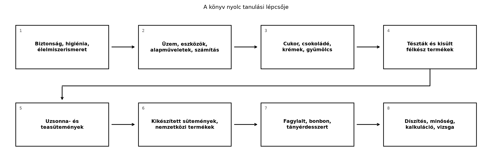
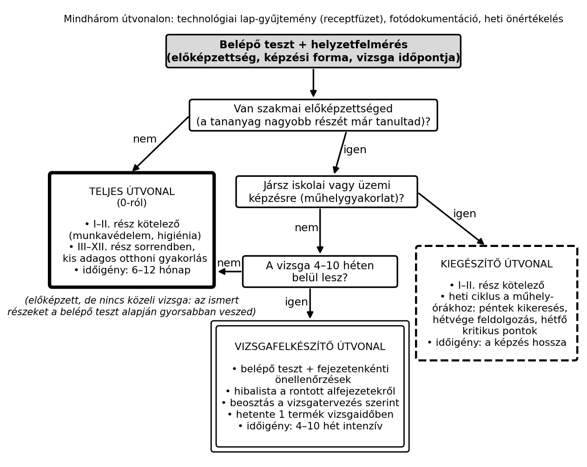
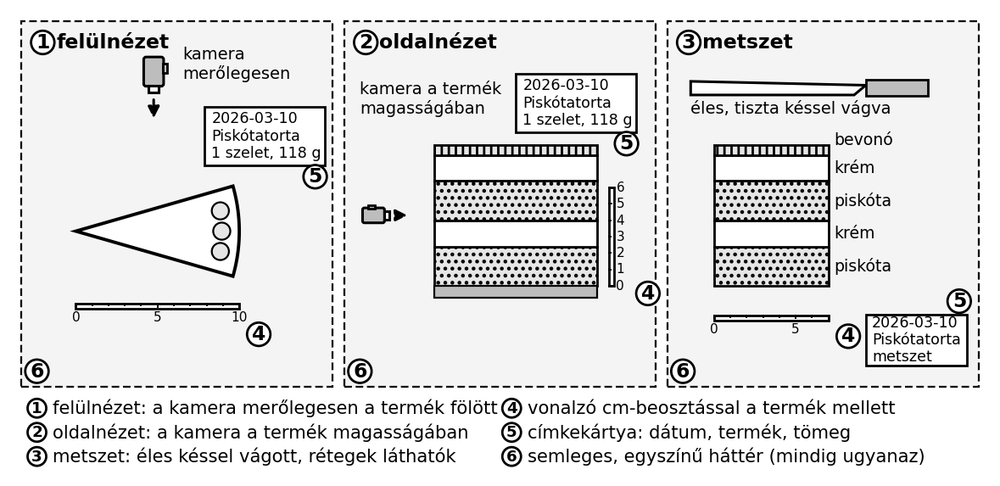
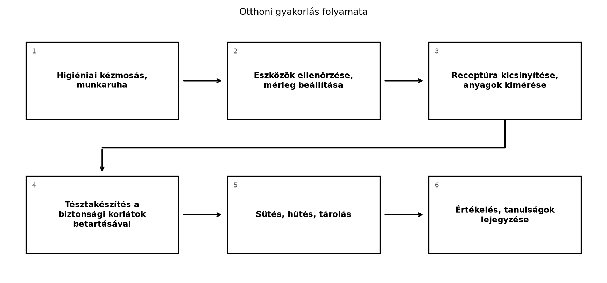

Egy cukrászüzemben hajnalban egyszerre több munka folyik: elkészül a felvert tészta, hűl a főzött krém, a pultban előző napról maradt tejszínes sütemény várja a hőmérséklet-ellenőrzést, a raktárban pedig át kell venni a lisztet. A tanuló nemcsak recepteket tanul, hanem felelősséget is: egy hibás hűtési lépés vendégeket betegíthet meg, egy rosszul számolt anyaghányad veszteséget okoz.
Ez a fejezet azért készült, hogy a tanuló mindig tudja, hol van, miért tanulja az adott témát, és melyik tudásrész hová épül be. A cukrász szakma nem receptgyűjtemény, hanem egymásra épülő rendszer: a higiénia nélkül nincs biztonságos termék, az alapműveletek nélkül nincs tészta, a kalkuláció nélkül pedig nincs gazdaságos üzem.
A kompetenciatérkép úgy működik, mint egy üzemi folyamatábra: előbb a biztonságos alapok, utána a nyersanyagok, majd a félkész termékek, végül a késztermékek, a díszítés, a gazdálkodás és a vizsga. A lépcsők nem ugorhatók át, mert mindegyik a korábbira épül.

A diagram nyolc lépcsője a tanulási ívet mutatja. Az első lépcső a munkavédelem, a higiénia és az élelmiszerismeret. A második a cukrászüzem, az eszközök, az alapműveletek és a számítás. A harmadik és negyedik a félkész termékek két nagy csoportja: a cukorkészítmények, bevonók, krémek, gyümölcskészítmények, majd a tészták. Az ötödik és hatodik a kisült és kikészített sütemények. A hetedik a hidegcukrászat, a bonbon és a tányérdesszert. A nyolcadik a díszítés, a minőség, a gazdálkodás és a vizsgafelkészülés.
Definíció. A cukrász olyan élelmiszer-előállító szakember, aki cukrászati félkész és késztermékeket – tésztákat, krémeket, tortákat, süteményeket, fagylaltokat, bonbonokat, tányérdesszerteket – készít, díszít, tárol és értékesít a higiéniai, élelmiszerbiztonsági, minőségi és gazdaságossági követelmények szerint.
Definíció. A kompetenciatérkép a tanuló számára azt mutatja meg, hogy a szakmai vizsga és a munkahelyi feladatok mely tudáselemekből épülnek fel, és ezeket a könyv melyik fejezete tárgyalja. Nem jogszabályi dokumentum, hanem tanulási eszköz: a fejezetek közötti kapcsolatokat teszi láthatóvá.
Szabály. A könyv minden alfejezete ugyanazt a tanulási szerződést követi: motiváció, szemléletes kép, definíciók és szabályok, technológiai vagy eljárási lépések, számítás, jogszabályi keret, gyakorlati útmutató, minőségellenőrzés, tipikus hibák, valós alkalmazás, önellenőrzés, feladatok, megoldások, rövid összefoglaló, források és ellenőrzési hiányok. Így a tanuló mindig tudja, mire számíthat, és az ismétlés is célzottan történik.
A cukrász nemcsak cukrászdában dolgozhat. Munkaterületei:
A termékcsoportok átfogják a teljes cukrászati palettát: cukorkészítmények, bevonó anyagok, töltelékek, gyümölcskészítmények, élesztős, omlós, vajas, leveles, forrázott, felvert, hengerelt és mézes tészták, uzsonna- és teasütemények, torták, szeletek, tekercsek, minyonok, krémesek, tejszínes sütemények, nemzetközi termékek, fagylaltok, parfék, pohárkrémek, bonbonok, tányérdesszertek, valamint díszítőelemek.
A pályakép továbblépést is kínál: gyakorlott cukrász lehet műszakvezető, üzemvezető, termékfejlesztő, oktató, vállalkozó vagy mestervizsgát tett cukrászmester. A mestervizsga pontos feltételei és a mestercím mai megnevezése a szakképzési szabályok szerint változhat (ellenőrizendő: aktuális mestervizsga-rendelet, szakmajegyzék).
A cukrász szakma korábbi OKJ-száma 34 811 01 volt. A
2016-os kerettanterv modulszámai: 11497-12,
11499-12, 11518-16, 11519-16,
11521-16, 11522-16, 11561-16. A
jelenlegi rendszerben a szakképzési törvény (2019. évi LXXX. törvény), a
Képzési és kimeneti követelmények (KKK) és a programtantervek (PTT)
határozzák meg a szakma pontos nevét, tantárgyait és
vizsgakövetelményeit (ellenőrizendő: aktuális szakmajegyzéki
név, szám, KKK/PTT). A könyv ezért nem egy adott év tantárgyi
óraszámát követi, hanem a szakma teljes tudásanyagát a tizenkét részbe
rendezi.
| Könyv része | Fő tartalom | Jellemző képzési terület |
|---|---|---|
| I. | Útmutató, munkavédelem, tűzvédelem, elsősegély | munkahelyi egészség és biztonság |
| II. | Élelmiszerbiztonság, mikrobiológia, allergének, élelmiszerjog, HACCP | élelmiszer-higiénia, HACCP |
| III. | Táplálkozástan, élelmiszerismeret, édesítők, tej, tojás, liszt, zsiradék, csokoládé, gyümölcs, adalékok | élelmiszerismeret, táplálkozástan |
| IV. | Cukrászüzem, eszközök, gépek, alapműveletek, mértékegységek, anyaghányad, veszteség, tápérték | technológiai alapok, számítás |
| V. | Cukorkészítmények, bevonók, töltelékek, gyümölcstartósítás | félkész termékek I. |
| VI. | Élesztős, omlós, vajas, leveles, forrázott, felvert, hengerelt, mézes tészták | félkész termékek II. |
| VII. | Uzsonnasütemények, teasütemények | késztermékek I. |
| VIII. | Torták, szeletek, tekercsek, minyonok, desszertek, krémesek, tejszínesek, nemzetközi cukrászat | kikészített sütemények |
| IX. | Fagylalt, parfé, pohárkrém, bonbon, tányérdesszert | hidegcukrászat, édesipari termékek |
| X. | Díszítés, dísztorták, szakrajz | díszítés, szakrajz |
| XI. | Minőség, forgalomba hozatal, munkaszervezés, gazdálkodás, kalkuláció | minőségbiztosítás, gazdálkodás |
| XII. | Foglalkoztatás, szakmai idegen nyelv, vizsgafelkészülés | foglalkoztatás, nyelv, vizsga |
A táblázat a könyv tizenkét részének tanulási térképét adja. A gyakorlatban egy vizsgatéma több részt is érinthet: például a Dobos torta a VI. részből a felvert tésztát, az V. részből a karamellt és a krémeket, a VIII. részből a torta összeállítását, a XI. részből a kalkulációt használja.
Minden alfejezet ugyanazt a logikát követi, ezért a tanuló nem téved el. A szerkezet a következő:
A könyvben használt kiemelések jelentése:
A technológiai lap szerepe azért központi, mert a vizsgán és a munkahelyen nem elég „nagyjából tudni” a receptet. A lap mindig tartalmazza az alapmennyiséget, az anyaghányadot táblázatban, az eszközöket, a műveleti sorrendet, a hőfok- és időértékeket, a kritikus pontokat, az allergéneket, a minőségi jellemzőket és az eltarthatóságot. Így a termék elkészítése és ellenőrzése is dokumentálható.
Továbbvitt eredmény. Az itt bemutatott tanulási szerződést, a kiemelések jelentését és a technológiai lap szerkezetét használja a Tanulási útvonalak, belépő teszt és önellenőrzés alfejezet, valamint a későbbi gazdálkodási és kalkulációs alfejezetek (például A gazdálkodás elemei és a piac), mert a termékkalkuláció is a technológiai lap anyaghányad- és veszteségadataira épül.
A könyv a cu000–cu169 alfejezetekkel 170
alfejezetet tartalmaz. A tanulási idő tervezése egyszerű
arányszámítás.
1. példa. Ha egy tanuló hetente 3 alfejezetet dolgoz fel alaposan, mennyi idő alatt ér a könyv végére?
Adott: alfejezetek száma , sebesség alfejezet/hét. Keresett: az idő .
Az eredmény kerekítve kb. 57 hét, azaz körülbelül 13–14 hónap. Ez tanulási becslés, nem hatósági előírás.
2. példa. Ha a vizsgáig 20 hetünk van, és a fontosnak ítélt 60 alfejezetet át kell ismételni, hetente hány alfejezetet kell venni?
Ellenőrzés: , tehát a terv teljesíthető, ha hetente 3 alfejezetet valóban el is mélyítünk, nemcsak átlapozunk.
Jogszabály. A könyv a Magyarországon hatályos és az
EU-ban közvetlenül alkalmazandó szabályokat követi. A fő keretek: az
általános élelmiszerjog (178/2002/EK rendelet), az élelmiszer-higiénia
(852/2004/EK rendelet), az állati eredetű élelmiszerek különös higiéniai
szabályai (853/2004/EK rendelet), a mikrobiológiai kritériumok
(2073/2005/EK rendelet), a fogyasztók tájékoztatása és a 14
allergéncsoport (1169/2011/EU rendelet), az adalékanyagok (1333/2008/EK
rendelet), a kakaó- és csokoládétermékek (2000/36/EK irányelv és magyar
átültetése), a Magyar Élelmiszerkönyv, valamint a munkavédelmi törvény
(1993. évi XCIII. törvény). A konkrét cikkszámokat, határértékeket,
hőfok-idő előírásokat a fejezetek csak tanulási példaként,
(ellenőrizendő) jelöléssel közlik.
A tanuló akkor tekintheti feldolgozottnak az alfejezetet, ha:
Hiba. A tanuló a receptet elolvassa, de a higiéniai
lépéseket átugorja, mert „a technológia a fontos”.
Ok: a vizsgán és az üzemben a higiénia nem
elkülöníthető lépés, hanem a folyamat része.
Megelőzés: minden gyakorlat előtt olvasd el a
Higiénia és Kritikus pont részeket is,
nemcsak a tésztakészítést.
Hiba. A tanuló mértékegység nélkül számol: „250
lisztet megszorzom kettővel”.
Ok: a mértékegység nélküli számok a konyhában
félreérthetők (gramm, kilogramm, milliliter).
Megelőzés: mindig írd ki az egységet, és a feladat
végén ellenőrizd a nagyságrendet.
Hiba. A tanuló csak a definíciókat magolja, a
Továbbvitt eredmény bekezdéseket kihagyja.
Ok: így a későbbi alfejezetek nem állnak össze
rendszerré.
Megelőzés: a rövid összefoglalóban megadott továbbvitt
eredményeket jelöld ki, és gondold végig, hol használod majd őket.
Viki felnőttképzésben tanul, munka mellett naponta legfeljebb 45 perce van tanulni. A vizsgáig 30 hete van. A könyvtérkép alapján először a II. rész higiéniai és HACCP alfejezeteit veszi át, mert ezek a vizsga minden gyakorlati feladatában megjelennek. Utána a IV. rész számítási alfejezeteit ismétli, mert a receptúra-átszámítás nélkül nem tudja a gyakorlati vizsgadarabot méretezni. A termékek közül először a felvert tésztát és a főzött vaníliakrémet gyakorolja, mert több torta és sütemény is ezekre épül. A terv: hetente 3 alfejezet, a 30. hétig 90 alfejezet, a maradék idő ismétlésre és próbavizsgára. Így a térkép nem plusz teher, hanem időmegtakarítás.
1. feladat (A). Sorolj fel három cukrász munkahelytípust, és mindegyikhez írj egy jellemző terméket.
2. feladat (A). Sorold fel a nyolc tanulási lépcsőt a diagram alapján.
3. feladat (B). A könyv 170 alfejezetből áll. Ha hetente 5 alfejezetet dolgozol fel, hány hét alatt érsz a végére? Számolj képlettel, mértékegységgel, ellenőrzéssel.
4. feladat (B). Egy vizsgatémához 8 alfejezet tartozik. A vizsgáig 4 hét van. Hány alfejezetet kell hetente feldolgozni? Számolj, és értékeld, hogy reális-e a terv, ha egy alfejezetre legalább 2 órát kell szánni, és heti 6 órád van tanulásra.
5. feladat (C). A tanuló a Tojáskrémek I: főzött sárgakrém és vaníliakrém alfejezetből csak a receptet tanulja meg, a Továbbvitt eredmény és a hűtési kritikus pontok nélkül. Milyen hibák várhatók a Krémesek: vajas/leveles és forrázott tésztából alfejezet gyakorlatában? Nevezz meg legalább két technológiai vagy élelmiszerbiztonsági következményt.
6. feladat (D). Készíts saját tanulási térképet. Válassz egy számodra fontos vizsgatémát, írd le, melyik könyvrészek és alfejezetek tartoznak hozzá, és készíts heti ütemezést a vizsgáig vagy a következő 8 hétre. A feladat előkészíti a Tanulási útvonalak, belépő teszt és önellenőrzés használatát.
Önellenőrzés – válaszok
(ellenőrizendő) jelöléssel szerepelnek, mert a
hatályos jogszabályt, NÉBIH-útmutatót vagy gyártói adatlapot mindig
ellenőrizni kell.1. feladat (A). Például: cukrászüzem – Dobos torta; szállodai cukrászat – tányérdesszert; kézműves műhely – bonbon. Elfogadható a cukrászda – krémes, éttermi cukrászat – pohárkrém is.
2. feladat (A). Biztonság, higiénia, élelmiszerismeret; üzem, eszközök, alapműveletek, számítás; cukor, csokoládé, krémek, gyümölcs; tészták és kisült félkész termékek; uzsonna- és teasütemények; kikészített sütemények, nemzetközi termékek; fagylalt, bonbon, tányérdesszert; díszítés, minőség, kalkuláció, vizsga.
3. feladat (B). Adott: , alfejezet/hét. Keresett: .
Ellenőrzés: . Tehát 34 hét.
4. feladat (B). Adott: , hét. Keresett: .
Időigény: óra/hét. Ez kevesebb a rendelkezésre álló heti 6 óránál, tehát a terv reális; a fennmaradó 2 óra ismétlésre és önellenőrzésre jut.
5. feladat (C). Ha a főzött sárgakrémet a tanuló csak receptként tanulja, a krém hűtése, a kritikus hőmérséklet és a gyors hűtés elmaradhat. A krémes összeállításánál a meleg krém megolvaszthatja a vajas/leveles lapot, a krém mikrobiológiailag veszélyes zónában maradhat, és a késztermék hűtve tárolása sem tudatosul. Ezért a krémes élvezeti értéke és élelmiszerbiztonsága is romlik.
6. feladat (D). A gyakorlati feladatnál értékelési szempont: a választott témához tartozó részek pontos megnevezése, legalább 4 kapcsolódó alfejezet felsorolása, heti ütemezés, és annak indoklása, hogy a higiéniai, számítási és technológiai alfejezetek hogyan épülnek egymásra.
A könyv a cukrász szakma teljes tudásanyagát tizenkét részbe és 170 alfejezetbe rendezi. A tanuló a kompetenciatérképet nyolc lépcsőként használhatja: biztonság és higiénia, üzem és alapműveletek, félkész termékek, tészták, kisült sütemények, kikészített sütemények, hidegcukrászat, végül díszítés, minőség, kalkuláció és vizsga. Minden alfejezet azonos szerkezetű: motiváció, szemléletes kép, definíciók, technológia, számítás, gyakorlati útmutató, minőség, hibák, eset, önellenőrzés, feladatok. A kiemelések – Definíció, Szabály, Jogszabály, Higiénia, Figyelem, Tilos, Technológiai lap, Kritikus pont, Biztonsági korlát, Továbbvitt eredmény – minden fejezetben azonos jelentéssel térnek vissza. A technológiai lap mindig tartalmazza az anyaghányadot, a műveleti sort, a kritikus pontokat, az allergéneket, a minőségi jellemzőket és az eltarthatóságot. A továbbvitt eredményeket a Tanulási útvonalak, belépő teszt és önellenőrzés és a későbbi gazdálkodási alfejezetek, például a A gazdálkodás elemei és a piac, is használják.
A fejezet jogszabályi háttere: 178/2002/EK, 852/2004/EK, 853/2004/EK,
2073/2005/EK, 1169/2011/EU, 1333/2008/EK, 2000/36/EK irányelv, Magyar
Élelmiszerkönyv, 1993. évi XCIII. törvény, 2019. évi LXXX. törvény. A
konkrét cikkszámok, határértékek, modultartalmak, szakmajegyzéki név,
mestervizsga-feltételek, KKK és PTT adatok (ellenőrizendő)
jelölést igényelnek. A tanulási időszámítás csak becslés, nem képzési
előírás.
Mit kezdjek először? Ez a leggyakoribb kérdés, amikor valaki egyedül vág bele a cukrásztanulásba. A tankönyv sok témája rendezetten követi egymást, de a napi tanulási idő, az előképzettség és a vizsga időpontja mindenkinél eltérő. Ha rossz sorrendben haladsz, akkor úgy jársz, mint egy műhelyben akkor, amikor a tanuló előbb áll a habfúvó géphez, mint hogy megtanulta volna a tojásfehérje-hab készítését: nem tudja, mit kell látnia, és mi a hiba. Ezért ebben az alfejezetben három tanulási útvonalat kapsz, egy belépő tesztet, és egy egyszerű módszert arra, hogy a saját haladásodat nyomon kövesd.
Képzeld el, hogy egy 16 hetes felnőttképzésre jársz, heti 2 nap műhelygyakorlattal. A hétvégén otthon tanulsz, hétköznap a munkahelyi gyakorlatot végzed. A tananyag nem egy egyenes vonal: egyes részeket a gyakorlatban hamarabb érintesz, mint ahogy a könyvben odaérnél. A tanulási útvonal ezért nem kötött menetrend, hanem rugalmas navigáció, amely megmondja, melyik részt milyen sorrendben érdemes feldolgozni, és mit érdemes előre átfutni.
A belépő teszt célja nem az osztályzás. Olyan, mint amikor a cukrász reggel ellenőrzi a műhely hőmérsékletét és az előző napi félkész termékek állapotát: azt nézi, milyen alapról indul a nap, és mi kíván azonnali javítást.
Tanulási útvonal. A tanulási útvonal olyan, előre meghatározott sorrendet jelent, amely az egyes fejezetek feldolgozásának ütemezését és a gyakorlási módot az előképzettséghez, a képzési formához és a rendelkezésre álló időhöz igazítja. Nem helyettesíti a tankönyvet, hanem beosztja.
Önellenőrzés. Az önellenőrzés a tanuló által végzett, értékelés nélküli ellenőrzés, amelynek célja, hogy a tanuló maga döntse el, készen áll-e továbbhaladni, vagy vissza kell térnie egy korábbi témához. A szakmai vizsgán ez az önálló hibafelismerés gyakran többet ér, mint egy kívülről megadott jegy.
Technológiai lap-gyűjtemény. A technológiai lap-gyűjtemény (vagy receptfüzet) a tanuló által vezetett, rendszerezett gyűjtemény, amelyben a recepteket, anyaghányadokat, műveleti sorrendeket, kritikus pontokat, minőségi jellemzőket és hibákat egy séma szerint rögzíti. Ez a gyűjtemény a későbbi gyakorlati útmutatók és a vizsgafelkészülés alapdokumentuma.
Szabály. A belépő teszt eredményét soha ne kezeld osztályzatként. Ha egy alapműveleti hiba derül ki, akkor azt a hiányosságot pótold, mielőtt az első receptet átszámítanád.
Higiénia. Mielőtt bármilyen otthoni gyakorlásba kezdesz, olvasd el az otthoni tanulókonyha biztonsági és higiéniai kereteit a következő alfejezetben: Otthoni tanulókonyha: eszközök, higiénia és biztonsági határok. Az itteni gyakorlófeladatok egy része csak gondolkodtat, ez nem helyettesíti a műhelygyakorlatot.
Az alábbi teszt nem vizsgált jogszabályi vagy szakmai ismeretet, hanem a könyvhöz szükséges alapkészségeket méri. Az egyes számításoknál mindig mértékegységgel dolgozz.
Mértékegység-átváltás.
Váltsd át: 0,750 kg = ? g; 250 ml víz = ? g (feltéve, hogy a víz
sűrűsége 1 g/ml); 1,2 l tejszín = ? ml.
Százalékszámítás.
Egy 2 000 g tésztaréteg 18% cukrot tartalmaz. Hány gramm cukor van
benne?
Arányosság.
Egy recept 500 g liszttel 20 db süteményt ad. Mennyi liszt kell 26
db-hoz?
Alapművelet.
Egy technológiai lépés 12 percig tart, utána 35 perc hűtés, majd 8 perc
kikészítés következik. Összesen mennyi idő?
Törtek.
Egy torta tésztája 3/4 részben liszt, a maradék keményítő. A liszt 600
g. Mennyi a keményítő tömege?
1. 0,750 kg = 750 g; 250 ml víz = 250 g (a feladat feltétele szerint); 1,2 l tejszín = 1 200 ml.
2.
m_cukor = 2 000 g × 18 / 100 = 360 g.
3. k = 26 / 20 = 1,3;
m_liszt = 500 g × 1,3 = 650 g.
4. t = 12 + 35 + 8 = 55 perc.
5. A keményítő aránya 1 − 3/4 = 1/4. A
liszt 600 g = 3/4 rész, ezért az egész
600 g / (3/4) = 800 g, a keményítő
800 g × 1/4 = 200 g. Ellenőrzés:
600 + 200 = 800 g.
Ha mind az öt feladat hibátlan, a számítási alfejezetek (IV. rész, mértékegységek, anyaghányad) gyorsabban haladhatnak. Az I. és II. rész (munkavédelem, élelmiszer-higiénia) feldolgozása a teszt eredményétől függetlenül minden tanulónak kötelező. Ha az átváltás hibás, akkor a Mennyiségi egységek, átváltások, százalékszámítás és kerekítés alfejezetet kell tüzetesen átvenned. Ha a százalék- vagy arányszámítás ment rosszul, akkor a Viszonyszámok és a Receptúra és anyaghányad: nagyítás, kicsinyítés, szorzószám alfejezet alapján dolgozz.
A könyv három fő útvonalat ajánl. Az útvonalakat aszerint válaszd ki, hogy mi a foglalkozásod, mennyi időd van, és van-e üzemi gyakorlatod.

Az ábra a belépő teszt után három kérdést tesz fel. Ha nincs szakmai előképzettséged, a teljes útvonal (vastag keret) a tiéd. Ha van, és közben iskolai vagy üzemi képzésre jársz, a kiegészítő útvonalat (szaggatott keret) követed. Ha nem jársz képzésre, és a vizsga 4–10 héten belül lesz, a vizsgafelkészítő útvonal (kettős keret) következik; ha a vizsga távolabb van, a teljes útvonalon haladsz, de az ismert részeket gyorsabban veszed. Az I–II. rész (munkavédelem, higiénia) mindhárom útvonalon kötelező.
Ez a leghosszabb, de a legbiztonságosabb. Célja, hogy a nulláról induló tanuló a szakmai vizsga teljes anyagát lefedje.
Javasolt sorrend:
Ha közben iskolai vagy felnőttképzési órákra jársz, a munkahelyen pedig gyakorolsz, akkor a könyv arra való, hogy az órákat előkészítse és kiegészítse. Ne a teljes könyvet lineárisan olvasd.
Javasolt heti ritmus:
Ez az útvonal azoknak való, akik a tananyag nagy részét már hallották, de hiányos a rendszerezés, vagy vizsgaközpontú ismétlésre van szükségük.
Javasolt sorrend:
| Jellemző | Teljes útvonal | Kiegészítő útvonal | Vizsgafelkészítő |
|---|---|---|---|
| Előzetes ismeret | nincs vagy kevés | részben van | nagyobb része van |
| Cél | teljes szakma | órákhoz igazodás | rendszerezés, ismétlés |
| Módszer | lineáris, alapozó | tematikus, heti ciklus | hibaalapú, tematikus |
| Gyakorlat | otthon, kis adag | üzemi/iskolai | üzemi, iskolai, otthon |
| Várható időigény | 12–18 hónap (heti 2–3 alfejezet; heti 3 alfejezettel kb. 57 hét) | a képzés hossza | 4–10 hét intenzív |
Megjegyzés. A konkrét időigény függ a képzési formától és a vizsga időpontjától. A táblázat nem hatósági előírás, hanem didaktikai ajánlás.
A legjobb útvonal is csak akkor működik, ha beépül a hétbe. Készíts heti tervet, és a hét végén értékeld.
A heti terv legalább a következőket tartalmazza:
| Nap | Tevékenység | Idő |
|---|---|---|
| Hétfő | A munkavédelem rendszere és a cukrász jogai, kötelességei elolvasása, jegyzet | 60 perc |
| Kedd | Mennyiségi egységek, átváltások, százalékszámítás és kerekítés elmélete | 45 perc |
| Szerda | Számítási feladatok a mértékegységekből | 45 perc |
| Csütörtök | Élelmiszerlánc, élelmiszerbiztonság, minőség és nyomon követhetőség első fele | 60 perc |
| Péntek | Gyakorlati blokk: konyhai mérlegelés (liszt, víz, cukor) | 45 perc |
| Szombat | Önellenőrzés + hiányzó feladatok megoldása | 60 perc |
| Vasárnap | Heti önértékelés, következő hét terve | 30 perc |
Ez a terv nem azt jelenti, hogy minden nap ugyanannyit kell tanulnod. A fontos az, hogy a hét végére a kitűzött témát feldolgozd, és a hibákat kijavítsd.
Üzemi gyakorlatot semmi sem helyettesít teljesen. A cukrász szakmában a kéz melegét, a tészta nyújtásának érzetét, a temperált csokoládé folyását csak valós körülmények között lehet pontosan megtanulni.
Otthon azonban így gyakorolj:
A receptfüzet a te szakmai memóriád. Nem elég egy receptet bemásolni; a tanulási folyamatot és a gyakorlati megfigyeléseket is rögzíteni kell.
A receptfüzetbe kerülő minden terméknél a következő sémát használd:
Ezt a sémát a(z) Cukrászati termékcsoportok, megnevezések és a technológiai lap alfejezet tanítja részletesen. A cél az, hogy a vizsgán és a munkahelyen ugyanazon a séma szerint tudj dolgozni.
A telefonnal készített fotó a tanuló tükre. Készíts minimum három képet minden gyakorlótermékről:

A késztermékről mindig ugyanabból a három nézetből fotózz: felülről merőlegesen, oldalról a termék magasságában, és az éles késsel vágott metszetről. A termék mellé tegyél centiméteres vonalzót és egy címkekártyát (dátum, termék, tömeg), a háttér pedig legyen minden képen ugyanaz a semleges, egyszínű felület. Így a heti fotók összevethetők: látod, hogy nőtt-e a piskóta magassága, egyenletesebbek-e a rétegek.
A kép mellé írd fel: mi volt a recept, mi lett a termék tömege, mi a legfontosabb hiba, és mit kell legközelebb másként csinálni. A fotódokumentáció a vizsgafelkészítő útvonalban különösen hasznos, mert a vizsganapok előtt egy pillantással át tudod ismételni a hibáidat.
Az önértékeléshez vezess egyszerű táblázatot:
| Termék | Dátum | Sikerült | Hiba | Következő lépés |
|---|---|---|---|---|
| Piskóta | 2026-03-10 | a hab felverése | a tészta középen nyers | alacsonyabb hőfok, hosszabb sütés |
| Linzer | 2026-03-17 | a gyúrás | a nyújtásnál szakadt | hűtött tészta, kevesebb gyúrás |
| Fondán | 2026-03-24 | a hőfokmérés | a melegítésnél csomós | folyamatos keverés, gőzfürdő |
A táblázatban a „Hiba” és a „Következő lépés” oszlop a legfontosabb. Ez mutatja meg, hogy nemcsak megcsináltál valamit, hanem érted is, mi történt.
Cél. Készítsd el a saját tanulási tervedet és a receptfüzeted első oldalait.
Eszközök. Egy füzet vagy táblázatkezelő, egy számológép, a tankönyv, színes jelölők.
Higiéniai munkakezdés. A füzetbe csak akkor írj, ha a kezed tiszta; a receptfüzetet ne tedd nyers tojás, liszt vagy zsiradék mellé. Az otthoni konyhában a tanulási anyagok a tiszta, száraz zónában maradjanak.
1. Hamis. A teljes útvonal a 0-ról indulóknak való.
2. A vizsgafelkészítő útvonalat választanám, mert a nagyobb része megvan a tudásnak, és hibaalapú ismétléssel célzottan lehet gyakorolni.
3. k = 26 / 20 = 1,3.
4. A belépő teszt a tanulás elején mutatja meg, hol kell pótolni az alapokat; az önellenőrzés minden alfejezet végén azt ellenőrzi, hogy az adott egységet megértetted-e.
5. Név és alapmennyiség, anyaghányad táblázat, eszközök, műveleti sorrend, kritikus pontok, allergének, minőségi jellemzők.
6. Mert a képek gyorsan visszaidézik a termék hibáit és az elkerülési módot, így a vizsga előtt célzottan lehet ismételni.
1. feladat (A). Sorold fel a három tanulási útvonalat, és mindegyikhez írj egy olyan tanulói helyzetet, akihez illik.
2. feladat (A). Számítsd ki: a heti terv szerint hétfőn 60 perc, kedden 45 perc, szerdán 45 perc, csütörtökön 60 perc, pénteken 45 perc, szombaton 60 perc, vasárnap 30 perc tanulás van. Összesen hány óra ez?
3. feladat (B). Egy 800 g tészta 15% cukrot, 20% zsiradékot és 40% lisztet tartalmaz. Számítsd ki a három anyag tömegét, és ellenőrizd, hogy a maradék hány százalék.
4. feladat (B). Válassz egy terméket, és készítsd el a technológiai lap vázát a receptfüzetbe. Legalább 6 elemet tüntess fel.
5. feladat (C). Egy tanuló a vizsgafelkészítő útvonalat választja, de a belépő tesztben a százalékszámítás hibás. Milyen sorrendet javasolnál neki? Indokold.
6. feladat (D). Készíts az otthoni körülményeidhez igazított heti tervet, és a hét végén töltsd ki az önértékelő táblázatot. Fotózd le a gyakorlóterméket.
1. feladat. A három útvonal: teljes, kiegészítő, vizsgafelkészítő. Példák: teljes – aki most ismerkedik a szakmával; kiegészítő – aki iskolába jár és műhelygyakorlata van; vizsgafelkészítő – akinek a vizsga 4–6 hét múlva lesz, és rendezett ismétlésre van szüksége.
2. feladat.
t = 60 + 45 + 45 + 60 + 45 + 60 + 30 = 345 perc;
345 / 60 = 5,75 óra, azaz 5 óra 45 perc.
3. feladat.
Cukor: 800 g × 15 / 100 = 120 g.
Zsiradék: 800 g × 20 / 100 = 160 g.
Liszt: 800 g × 40 / 100 = 320 g.
A három anyag összesen: 120 + 160 + 320 = 600 g.
A maradék: 100% − (15 + 20 + 40)% = 25%. Ellenőrzés:
800 g × 25 / 100 = 200 g, és
600 + 200 = 800 g.
4. feladat. A várható elemek: termék neve, alapmennyiség, anyaghányad táblázat, eszközök, műveleti sorrend, kritikus pontok, allergének, minőségi jellemzők.
5. feladat. Először a Mennyiségi egységek, átváltások, százalékszámítás és kerekítés alfejezetet kell pótolnia, mert a vizsgán a receptúra-átszámítás és a kalkuláció alapja ez. Utána térjen vissza a vizsgafelkészítő útvonal többi eleméhez.
6. feladat. A gyakorlati feladat megoldása a tanuló saját körülményeitől függ. A tervben legyen legalább 2 számítási és 1 gyakorlati blokk, a táblázatban pedig a „sikerült/hiba/következő lépés” rovatok.
Továbbvitt eredmény. A saját technológiai lap-gyűjteményt (receptfüzetet) az Otthoni tanulókonyha: eszközök, higiénia és biztonsági határok alfejezettől kezdve minden gyakorlati útmutató használja.
Ebben az alfejezetben megtanultad kiválasztani a tanulási útvonalat. A teljes útvonal a 0-ról indulóknak, a kiegészítő az iskolai és üzemi órákhoz igazodó tanulóknak, a vizsgafelkészítő a rendszerező ismétlést végzőknek való. A heti terv 2–4 elméleti, legalább két számítási és egy gyakorlati blokkot tartalmazzon, kis adagú otthoni munkával. A belépő teszt az alapműveleteket, a százalékszámítást, a mértékegységeket és az arányosságot ellenőrzi. A saját receptfüzet technológiai lapjai a termék táblázatából, a műveleti sorból, a kritikus pontokból, az allergénekből és a minőségi jellemzőkből állnak. A fotódokumentációval és a hibanaplóval a vizsga előtt célzottan tudsz ismételni. Ez a gyűjtemény a későbbi gyakorlati útmutatók és a vizsgafelkészülés alapja lesz, amint azt az Otthoni tanulókonyha: eszközök, higiénia és biztonsági határok és a vizsgafelkészítő alfejezetek használják.
Az otthoni tanulókonyha akkor válik a szakmai fejlődés valódi eszközévé, ha a lelkesedés mellé a mérés, a higiénia és a biztonsági korlátok ismerete is társul. Kezdő cukrásztanulóként gyakran a konyhapulton, kis adagokban, saját fogyasztásra sütsz. Ha a mérleg pontatlan, a munkafelület nem tiszta, vagy a forró cukorral otthon, felügyelet nélkül próbálkozol, a legjobb recept is hibához, sőt balesethez vezethet. Ez az alfejezet segít felépíteni egy minimális, de célirányos tanulókészletet, és kimondja a biztonságos otthoni gyakorlás határait.
Képzeld el, hogy egyedül gyakorolsz otthon, és nincs megfelelő hőmérőd. Karamellt szeretnél készíteni, de a cukrot „szemre” főzöd. A szirup túlhevül, füstöl, és a kezedre fröccsen, amikor megmozdítod. Ha lett volna cukorhőmérőd, és ismerted volna a munkavédelmi szabályt, az égés elkerülhető lett volna. Az alábbi folyamatábra összefoglalja az otthoni gyakorlás helyes sorrendjét.

Definíció. Az otthoni tanulókonyha olyan magánháztartási konyha, amelyben a tanuló a szakmai alapműveleteket saját fogyasztásra, kis adagokban, az élelmiszer-higiéniai és munkavédelmi szabályok betartásával gyakorolja. Nem helyettesíti a tanműhelyt, de lehetővé teszi a receptúraszámítás, a mérés, a tésztakészítés, a sütés és az érzékszervi értékelés gyakorlását.
Szabály. Otthon csak olyan műveletet végezz, amelyhez rendelkezésre áll a megfelelő kéziszerszám, háztartási gép, mérőeszköz és biztonsági felszerelés. Ipari cukrászgépet (pl. nagy dagasztógép, tésztanyújtó hengersor, fagylaltgép, sokkoló) otthon nem használunk. Az ipari gépet csak cukrászüzemben, oktatás után és szakoktató felügyelete mellett szabad kezelni. Ez a korlát a balesetek és a technológiai hibák megelőzését szolgálja.
Higiénia. Az otthoni gyakorlás során is ugyanazt a gondosságot kell alkalmazni, mint egy üzemben: tiszta munkaruha vagy kötény, hajháló vagy összefogott haj, ékszer és karóra levétele, alapos kézmosás a munka megkezdése előtt, a nyersanyagok és az eszközök ellenőrzése. A konyhapultot, a tálakat, a habverőt és a vágódeszkát munka előtt és után tisztítsd meg. A nyers tojást mindig külön kezeld: a tojáshéj ne érintkezzen a kész masszával, és a tojásos alapanyagú termékeket mielőbb hűtőbe tedd.
A minimális eszközkészlet nem drága, de nélkülözhetetlen a pontos méréshez és a biztonságos munkavégzéshez.
| Eszköz | Jellemző | Mire használod? |
|---|---|---|
| Digitális mérleg | 1 g pontosság, teherbírás legalább 2 kg | Liszt, cukor, vaj, tészta mérése |
| Finom mérleg | 0,1 g pontosság | Só, fűszer, zselatin, kisebb adalékok mérése |
| Konyhai hőmérő (cukorhőmérő) | 200 °C-ig mér | Cukorfőzés, olaj hőmérséklete |
| Maghőmérő | tűszonda, gyors leolvasás | Késztermék belső hőmérséklete |
| Szilikon spatula | hőálló, hajlékony | Keverés, edénykaparás, ganache |
| Habverő | kézi, rozsdamentes | Tojáshab, tejszín, krémek lazítása |
| Nyomózsák és csőrök | 2–3 csőr (kerek, csillag) | Töltés, habnyomás, díszítés |
| Tortakarika | 24 cm-es, állítható vagy fix | Tortalapok, egyenletes rétegek, linzerkarika |
| Sütőpapír | hőálló, zsírálló | Tepsi bélelése, sablon, cukormassza nyújtása |
| Alap edények és tálak | rozsdamentes, hőálló | Keverés, melegítés, vízfürdő |
| Digitális konyhai óra | perc/másodperc | Műveleti idők, pihentetés, hűtés |
Az ábra számozása a táblázat sorrendjét követi. Figyeld meg a két mérleg és a két hőmérő különbségét: a finom mérleg (2) kisebb, és tized grammot is kijelez; a cukorhőmérő (3) hosszú, skálás cső, amelyet csipesz rögzít az edény falára, a maghőmérő (4) pedig rövid tűszondát szúrsz a termék belsejébe. Az állítható tortakarikát (8) az átfedő szakaszról és a csatról ismered fel. A HTML-kiadásban az eszköz nevére mutatva a rajzon kiemelődik az eszköz, és megjelenik a táblázat két oszlopa.
A gyártói termékajánlástól eltekintünk; válassz olyan eszközt, amelynek hiteles mérési pontossága ismert, és hőálló, élelmiszerrel érintkezésre alkalmas anyagból készült. A digitális mérlegnél ellenőrizd az elem állapotát, és tartsd sima, stabil felületen.
Az otthoni gyakorlás kulcsa a kis adag. Ezzel csökkented a nyersanyagköltséget, a hibás tételből származó veszteséget, és könnyebben gyakorolhatsz gyakran. A nagyüzemi recepteket le kell kicsinyítened. A szorzószám az új adag és az eredeti adag tömegének hányadosa:
Minden anyagmennyiséget ezzel a szorzóval kell megszorozni. A darabszámos nyersanyagokat (tojás, tojássárgája) is grammra kell váltani, mert a „darab” nem mérhető pontosan. Egy közepes tojás sárgája körülbelül 16 g (ellenőrizendő: tömegosztály szerint). A kicsinyítéskor azonban az egész tojással óvatosan bánj: ha a szorzás nem egész tojást ad, inkább a teljes receptet igazítsd úgy, hogy a tojásmennyiség egész vagy fél darab legyen, vagy használj felvert tojást tömegre mérve.
Példa. Egy linzerrecept hozzávalói együtt 937 g tésztát adnak (a recept „kb. 1 kg-os”), de te csak kb. 300 g tésztát szeretnél gyakorolni. A szorzószám alapja mindig a hozzávalók tényleges összege, nem a névleges „1 kg”.
A liszt mennyisége az eredeti receptben 500 g, a citromhéj 3 g, a só 2 g. Az új mennyiség:
A vaj 250 g, tehát:
A porcukor 150 g:
A tojássárgája az eredeti receptben 2 db, azaz körülbelül . Kicsinyítve , tömegre mérve 10 g (ez kb. fél tojássárgája; g-ra kerekítünk). A citromhéj , a só . A végeredményt mindig ellenőrizd az összesítéssel: , ami a kívánt 300 g-os tésztamennyiséggel gyakorlatilag megegyezik (a különbség a kerekítésből adódik). A gyakorlás során pontos mérleggel dolgozz.
Tilos 0,1 g pontosságot igénylő finommérleg nélkül kis adagú fűszert vagy zselatint mérni. Ilyenkor a hiba aránya nagy lehet: 0,5 g fűszer méréséhez legalább 0,1 g-os, de inkább 0,01 g-os mérleg kell. Ellenkező esetben a termék íze vagy állaga elcsúszik.
Jogszabály. Az otthoni gyakorlás során is be kell tartani az élelmiszer-higiénia általános elveit (852/2004/EK rendelet – ellenőrizendő: a magánháztartásban végzett tevékenység pontos alkalmazási köre). Az otthon készült termék kizárólag saját fogyasztásra szolgál, kereskedelmi forgalomba nem hozható. Aki rendszeresen, jövedelemszerűen szeretne otthon élelmiszert előállítani és értékesíteni, annak a kistermelői élelmiszer-termelésre vonatkozó külön jogszabályoknak kell megfelelnie (ellenőrizendő: a kistermelői rendelet hatályos száma, bejelentési és nyilvántartási feltételei). A könyv gyakorlati útmutatói mindig feltüntetik, ha egy termék forgalmazásához további engedély, jelölés vagy laborvizsgálat szükséges.
Az itt bemutatott technológiai lap egy olyan termékre épül, amely jól gyakorolható otthon: a linzerkarika. Az eredeti receptúra a hazai cukrászati gyakorlatban elterjedt tanulási arányokat követi (ellenőrizendő: szakmai testület receptgyűjteménye).
Technológiai lap. Linzerkarika – otthoni gyakorló adag.
| Nyersanyag | Mennyiség (g) | Megjegyzés |
|---|---|---|
| Liszt (finomliszt, BL 55) | 160 | szitálva |
| Vaj (hideg) | 80 | apró kockákra vágva |
| Porcukor | 48 | átszitálva |
| Tojássárgája | 10 | kb. fél darab, tömegre mérve |
| Citromhéj | 1 | reszelt, kezeletlen citromból |
| Só | 0,6 | finom szemű |
| Összesen | 299,6 |
Figyelem. A sütő forró! Mindig sütőkesztyűt használj a tepsi kivételekor, és a forró tepsit stabil, hőálló felületre helyezd. Gyermekeket és háziállatokat tarts távol a forró felületektől.
Biztonsági korlát. A fenti művelet otthoni környezetben, háztartási eszközökkel, kis adagban végezhető. Ipari dagasztógépet, nagy teljesítményű robotgépet vagy olajsütőt otthon ne használj; ezeket cukrászüzemben, oktatás után, felügyelet mellett kell kezelni.
Az otthon készült linzer értékeléséhez használd az érzékszervi szempontokat:
A tömegellenőrzéshez mérj meg három darab linzert, és hasonlítsd össze az átlaggal. Az otthoni gyakorlás során a tömegek ±10 %-os eltérése még elfogadható, de a nagy eltérés a nyújtás egyenetlenségére utal.
| Tünet | Ok | Megelőzés/Javítás |
|---|---|---|
| A tészta ragad, nyúlós, sütésnél szétfolyik | Túl meleg vaj, túl sok tojássárgája, vagy alacsony liszt–zsír arány | Hideg vajat használj, a tojást tömegre mérj, a tésztát pihentesd hűtőben. |
| A linzer kemény, nem omlós | Túlgyúrt tészta; a glutén túlzottan kifejlődött | Csak addig keverd, amíg a tészta éppen összeáll; ne dolgozd sokáig. |
| A linzer megég, keserű | Túl magas sütőhőfok vagy túl vékonyra nyújtott tészta | Hőfokellenőrzés hőmérővel, 3–4 mm vastagság, sütési idő betartása. |
| Egyenetlen a vastagság, a szélek már égnek, a közepe nyers | Egyenetlen nyújtás, hideg sütő | Nyújtsd egyenletesen, használj nyújtófát vastagságjelölő gyűrűkkel, előmelegített sütőt. |
| Nyers tojásos massza a pulton marad, kellemetlen szag alakul ki | A kész tésztát nem hűtötték, túl sokáig szobahőmérsékleten állt | A elkészített tésztát azonnal hűtőbe tenni, a maradékot légmentesen lefóliázni. |
Anna, egy felnőttképzésben tanuló cukrásztanuló, otthon gyakorolta a karamellkészítést, mert a tanműhelyben nem jutott elég ideje rá. Nem volt cukorhőmérője, és a receptben szereplő 165–170 °C-os karamellfokot (ellenőrizendő: receptúra, a cukorfőzési fokok táblázata) szemre próbálta eltalálni. A cukrot túl magas hőmérsékleten tartotta, a szirup sötétedni kezdett, majd keserű lett. Amikor egy fémkanállal megkeverte, a forró karamell ráfröccsent az alkarjára. Szerencsére azonnal hideg víz alá tette, de a bőr megégett. A tanulság: soha ne készíts forró cukrot, karamellt vagy olajat otthon megfelelő hőmérő, hosszú ujjú, hőálló védőruházat és stabil edény nélkül. A műveletet először a tanműhelyben, oktató felügyeletével kell gyakorolni, és csak azután, az ott tanult biztonsági szabályokkal szabad (ha egyáltalán) otthon, kis adagban megismételni.
1. feladat (A) Sorold fel az otthoni tanulókonyha minimális mérőeszközeit, és indokold, miért fontos a digitális mérleg pontos beállítása.
2. feladat (A) Egy recept 250 g vajat, 400 g lisztet, 200 g cukrot és 2 tojást (kb. 110 g) ír elő; a hozzávalók együtt 960 g tésztát adnak. Mennyi vaj, liszt és cukor kell 400 g tésztához? A tojás mennyiségét hogyan kezelnéd?
3. feladat (B) Írj egy 5 lépésből álló higiéniai munkarendet az otthoni linzerkészítéshez, kiemelve a nyers tojás kezelését.
4. feladat (B) Válassz ki egy másik otthoni gyakorlóterméket (pl. piskóta vagy keksz), és írd le a receptúra-kicsinyítés lépéseit, ha az eredeti (24 cm-es formában sülő) recept 12 szelethez szól, de te csak 4 szeletet szeretnél készíteni.
5. feladat (C) Elemezd a következő hibát: a linzer tésztája nyúlós, ragadós, sütés közben szétfolyik, és a széle túl gyorsan megbarnul. Mi lehet az ok? Hogyan javítható vagy előzhető meg?
6. feladat (D) Készítsd el otthon a fenti linzerkarikát a technológiai lap alapján. Töltsd ki a technológiai lapot, mérd meg három darab tömegét, és értékeld a terméket a minőségi szempontok szerint. Írd le a tanulságaidat.
1. feladat (A) Minimális mérőeszközök: digitális mérleg (1 g), finom mérleg (0,1 g), konyhai cukorhőmérő, maghőmérő, mérőedény (térfogatméréshez). A mérleg pontos beállítása azért fontos, mert a receptúra arányai csak akkor érvényesek, ha az anyagmennyiségek pontosak. Kis adagnál a hiba aránya nagyobb: 5 g tévedés 150 g lisztnél 3,3%-os, ami már érzékelhető állagkülönbséget okozhat.
2. feladat (A) A recept összes tömege
,
a szorzószám
.
Vaj:
.
Liszt:
.
Cukor:
.
Tojás:
db, azaz nem egész. Ezt tömegre kell váltani: ha 1 tojás ≈ 55 g, akkor 2
tojás = 110 g, kicsinyítve
.
A pontos méréshez a tojást egy tálban fel kell verni, és a 46 g-ot
tömegre kimérni (≈ 1 kisebb tojás); a maradékot hűtve, aznap fel kell
használni. Ellenőrzés:
.
3. feladat (B) 1. Kézmosás, tiszta munkaruha, haj összefogása. 2. Munkafelület, eszközök fertőtlenítése, a nyers tojás részére külön tálka. 3. A tojássárgáját közvetlenül felhasználás előtt válaszd szét; a tojáshéjat ne tedd a munkafelületre. 4. A tészta összeállítása után azonnal hűtőbe tenni, a maradék tojásos alapanyagot nem hagyni szobahőn. 5. Sütés után az eszközöket forró, mosószeres vízben elmosni, a felületet letörölni, a kezet ismét megmosni.
4. feladat (B) Választott termék: piskóta. Eredeti:
6 tojás, 180 g cukor, 180 g liszt, 12 szelethez. Új: 4 szelet, tehát
.
Tojás:
db; cukor:
;
liszt:
.
A tojás egész darab, így a számítás kivitelezhető. A sütőformát is
kisebbre kell választani, hogy a tortalap vastagsága megfelelő legyen.
Ha az eredeti forma 24 cm-es, az 1/3 adaghoz azonos lapvastagsághoz a
terület harmada kell, azaz
-es
forma (pl. 14–15 cm-es karika); 18 cm-es formában a lap kb. 40 %-kal
vékonyabb lesz, ezért rövidebb sütési idő kell.
5. feladat (C) A tünet hátterében valószínűleg a vaj túl meleg, a tészta nem volt kellően hűtött, vagy a liszt aránya kevés. A meleg, lágy vaj a tésztát kenhetővé teszi; a zsír a sütés elején megolvad, mielőtt a tészta szerkezete megszilárdulna, ezért a karika szétfolyik, a vékony szél pedig gyorsan megbarnul. További okok: kevés liszt, sok cukor vagy tojás, elmaradt hűtés. (A glutén túlfejlődése nem szétfolyást, hanem szívós, kemény tésztát okoz.) Megelőzés: hideg vaj, gyors keverés, hosszú pihentetés hűtőben. Ha már megtörtént, a tésztát visszahűtéssel és kevés plusz liszt hozzáadásával lehet menteni, de ez már a minőséget rontja; a legjobb új adagot készíteni.
6. feladat (D) A gyakorlati feladatot a fenti technológiai lap szerint kell elvégezni. Értékelési szempontok: a tészta omlóssága, a színe, a karikák formája, a tömegek egyenletessége, a higiéniai szabályok betartása, a teljes folyamat dokumentálása. A várt eredmény: kb. 30–35 db 5 cm-es karika (15–17 pár), egyenként kb. 7–9 g (sütve), aranysárga, omlós linzer. Ellenőrzés: egy 5 cm átmérőjű, 3–4 mm vastag karika térfogata kb. , azaz kb. 8–9 g nyers tészta. A tanuló fényképpel rögzíti a kész terméket, és szövegesen értékeli.
Az otthoni tanulókonyha akkor hatékony, ha pontos mérés, tiszta munkakörnyezet és biztonságos eszközhasználat jellemzi. A minimális készlet magában foglalja a digitális mérleget (1 g és 0,1 g), a konyhai és maghőmérőt, a szilikon spatulát, a habverőt, a nyomózsákot, a tortakarikát és a sütőpapírt. A kicsinyítésnél a szorzószám ; minden anyagot grammra váltva kell átszámolni. A tojás darabszáma helyett a tömeget kell használni. A forró cukor, forró olaj és ipari gépek otthoni használata tilos vagy erősen korlátozott; az ipari gépet csak üzemben, oktatás után, felügyelet mellett lehet kezelni. Az otthon készült termék kizárólag saját fogyasztásra szolgál. A nyers tojásos masszákat gyorsan le kell hűteni, a keresztszennyeződést el kell kerülni. Továbbvitt eredmény. Ezeket az otthoni gyakorlási szabályokat minden későbbi gyakorlati útmutatóban (pl. A sütés: hőátadás, változások a tésztában, sütési veszteség és sütés utáni műveletek) feltételezzük.